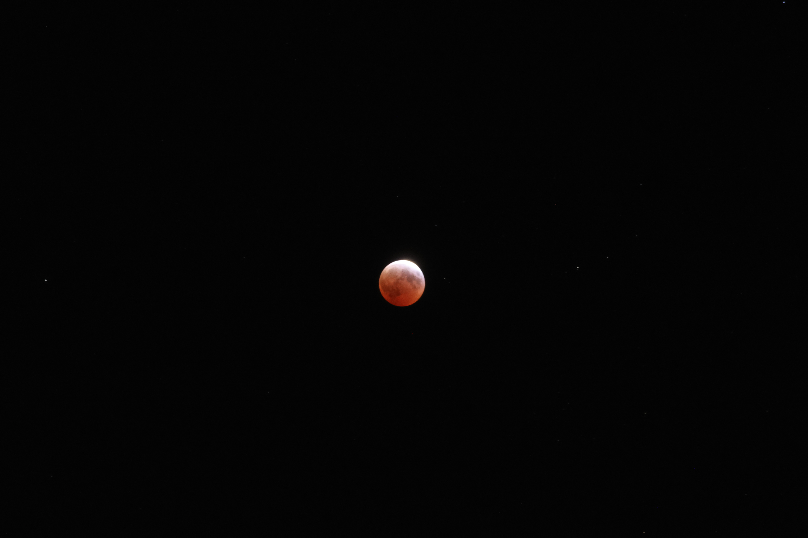
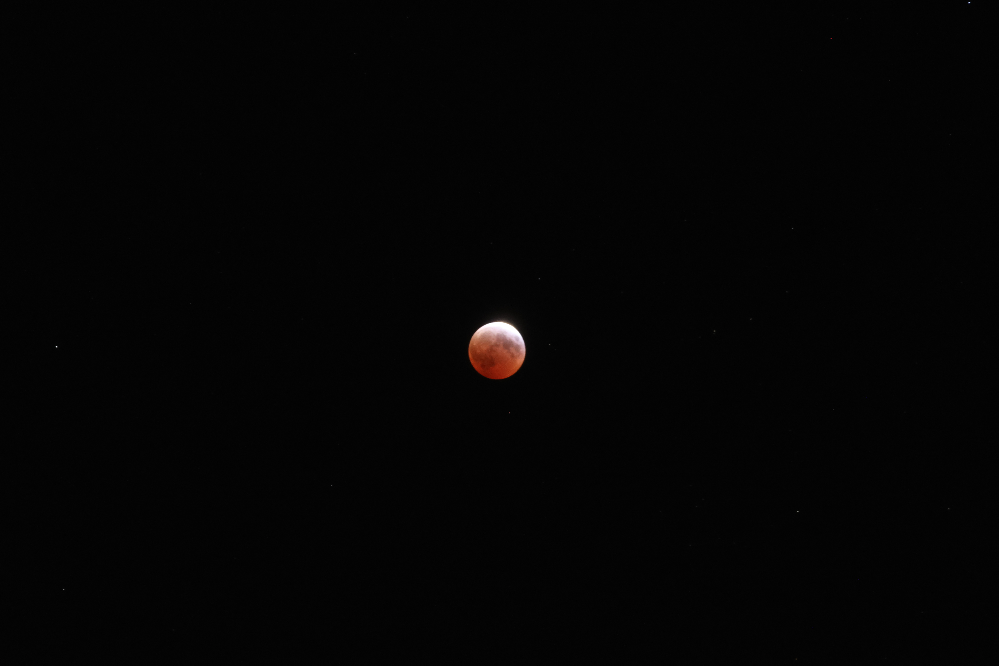

Open Figma Project File ↗
Open High Fidelity Prototype ↗
Open Canvas Presentation ↗

Uni-connect – Event Discovery & Social Matching App
University life can feel isolating, especially for commuters juggling tight schedules or first-years still finding their feet. Campus Connect cuts through the noise by curating campus events, matching students by shared interests, and sending real-time alerts so nobody misses out.
My Role & Core Skills
- User research & analysis : Surveys & 1-on-1 interviews (n = 15), personas, journey maps.
- Information architecture : Unified six event sources; new filter system cut “time-to-find” by 54 %.
- Figma prototyping : Low-fi wireframes → high-fi interactive prototype; reusable design system.
- Usability testing : Two moderated rounds, SUS 82/100; iterated nav & matching cues.
- Interaction & motion design : Micro-interactions and notification flows boost engagement.